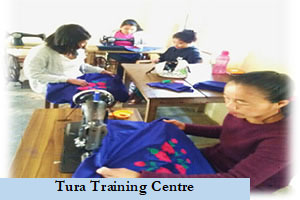
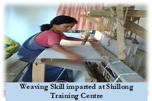
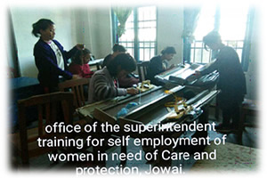
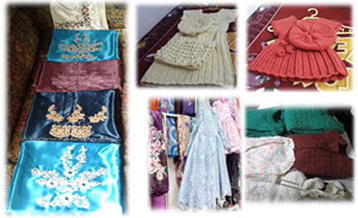
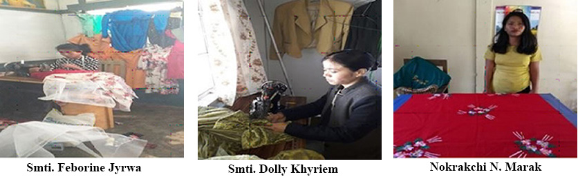
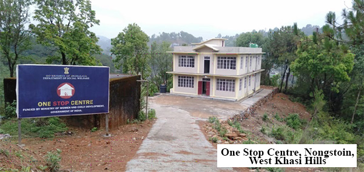
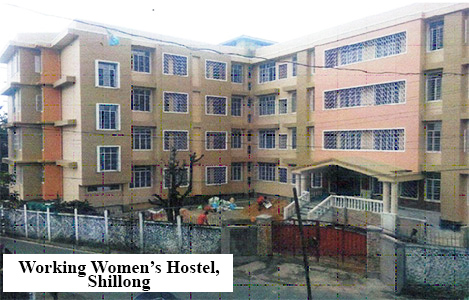
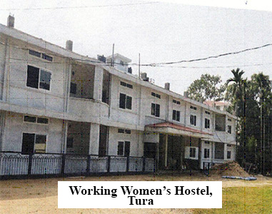

Women Welfare and Development
1. Training For Self Employment Of Women In Need Of Care And Protection

The Department of Social Welfare have set up Training for Self Employment of Women (TSEW) in Need of Care and Protection at Shillong, Tura and Jowai in the year 1975 for imparting training to destitute girl, orphan, widow, single parent and woman in distress in different trades such as knitting, tailoring, embroidery and weaving to empower them so that they become self-reliable and sustainable. The training centre is administered by the Superintendent, Training Self-Employment for Women in Need of Care and Protection.
Aims and Objectives
The aims and objectives of the Training for Self Employment of Women in Need of Care and Protection is to impart practical training in different trades i.e. Weaving, Tailoring, Knitting and Embroidery in up-to-date methods so that they can start independent career and earn their livelihood and thereby protecting them from falling prey to unscrupulous elements.
Management

The training classes are organized by the Superintendent, Training Self-Employment for Women in Need of Care and Protection with the help of one Instructor or Skilled Assistant who imparts training according to the syllabus prescribed for each trade.
Course Duration
The duration of the course is 1 (one) year. Every year the session starts from 1st June and closed by the last date of May the following year. During the session both Theoretical and Practical Training of each Trade are being imparted.
Selection of trainees
The applicants are selected by the Selection Committee as per the prescribed norms. The criteria for the selection of the candidates for the training comprise mainly for the (a) Orphan (b) Single Parent (c) Deserted wife’s and widow’s (d) Poor and large family (e) Recommended by Voluntary Organisation and Destitute.
The applications in prescribed form are available at the Office of the Superintendent. The duly completed application forms with copies of certificates from Secretary/President or any registered Voluntary Social Organisation/Village Headman in support of their helplessness and destitution, attested copies of School Certificates etc., are required during submission to the Superintendent according to the date fixed during advertisement.
Stipend/Token Grant

Stipend of Rs.500/- Rupees (Five Hundred) only per month which has been enhanced to Rs.1,500/- (Rupees one thousand five hundred) only is given to the selected candidates on recommendation of the Selection Committee which has to be approved by the Director of Social Welfare, Meghalaya, Shillong. In order to enable the passed out trainees to start their career and earn their livelihood, the Government also sanction grant as per the grade i.e., Grade ‘A’ @ Rs.5, 000/- which has also been enhanced to Rs.7000/- Grade ‘B’ @ Rs.4, 000/- enhanced to Rs.6000/- and Grade ‘C’ @ Rs.3, 500/- enhanced to Rs.5000/- as approved vide Government’s letter No. SW(S) 132/2005/Pt.I/575 dt.29.11.2021.
Price-Fixation-Cum-Sale-Committee
Disposal of articles produced in the centre is done by the Price-Fixation-Cum-Sale-Committee consisting of Members constituted by the Director of Social Welfare, Meghalaya, Shillong. Articles are disposed through Voluntary Social Welfare Organisation, Orphanages and similar Institutions for Women and Children. Sale Proceeds are credited to Treasury as Government receipt under appropriate Head of Account.

Target and Achievement (Physical)
Shillong
| Year | Trade | Capacity | Nos. of Trainees enrolled | No. of Trainees completed |
|---|---|---|---|---|
| 2013-14 | Embroidery | 40 | 13 | 9 |
| 2014-15 | Tailoring, Embroidery | 40 | 28 | 18 |
| 2015-16 | Embroidery, knitting, weaving | 40 | 38 | 22 |
| 2016-17 | Tailoring, Embroidery, Knitting, Weaving | 40 | 40 | 27 |
| 2017-18 | Tailoring, Embroidery, Knitting, Weaving | 40 | 33 | 16 |
| 2018-19 | Tailoring, Embroidery, Knitting, Weaving | 40 | 32 | 21 |
| 2019-20 | Tailoring, Embroidery, Knitting, Weaving | 40 | 36 | 16 |
| 2020-21 | Tailoring, Embroidery, Knitting, Weaving | 40 | 35 | Under Training |
Jowai
| Year | Trade | Capacity | Nos. of Trainees enrolled | No. of Trainees completed |
|---|---|---|---|---|
| 2013-14 | Embroidery | 25 | 25 | 16 |
| 2014-15 | Tailoring, Embroidery | 25 | 25 | 18 |
| 2015-16 | Embroidery, knitting, weaving | 25 | 25 | 19 |
| 2016-17 | Tailoring, Embroidery, Knitting, Weaving | 25 | 25 | 20 |
| 2017-18 | Tailoring, Embroidery, Knitting, Weaving | 25 | 25 | 19 |
| 2018-19 | Tailoring, Embroidery, Knitting, Weaving | 25 | 21 | 19 |
| 2019-20 | Tailoring, Embroidery, Knitting, Weaving | 25 | 22 | 21 |
| 2020-21 | Tailoring, Embroidery, Knitting, Weaving | 25 | 23 | 15 |
Tura
| Year | Trade | Capacity | Nos. of Trainees enrolled | No. of Trainees completed |
|---|---|---|---|---|
| 2013-14 | Embroidery | 40 | 40 | 40 |
| 2014-15 | Tailoring, Embroidery | 40 | 40 | 40 |
| 2015-16 | Embroidery, knitting, weaving | 40 | 40 | 40 |
| 2016-17 | Tailoring, Embroidery, Knitting, Weaving | 40 | 40 | 40 |
| 2017-18 | Tailoring, Embroidery, Knitting, Weaving | 40 | 40 | 40 |
| 2018-19 | Tailoring, Embroidery, Knitting, Weaving | 40 | 40 | 40 |
| 2019-20 | Tailoring, Embroidery, Knitting, Weaving | 40 | 40 | 40 |
| 2020-21 | Tailoring, Embroidery, Knitting, Weaving | 40 | 40 | 28 |
Success Stories
Success stories of the Office of the Superintendent of Training for Self Employment and Women in Need of Care and Protection
Smti. Feborine Jyrwa is 26 years old unmarried, daughter of (L) J. Shullai and Smti. S. Jyrwa and she is a house wife. She enrolled herself for Training in Tailoring Section for the year 2014-2015. After she passed out from this Vocational Training she is working at a tailoring shop to support her mother. She is planning to set up her own business in future.
Smti. Dolly Khyriem is 27 years old unmarried, She is a daughter of Shri. S. Kurbah and Smti. D. Khyriem. She enrolled herself for Training in Tailoring Section for the year 2014-2015. After she passed out from the Vocational Training institute she set up her own shop at Mawphlang. Her products are appreciated by all.
Nokrakchi N. Marak is 19 years old from Rongjeng Aski Patal and daughter of Shri. Gin. S Samgma, who is a Daily Wage Labourer and Smti. Pebula N. Marak, who is a house wife. Nokrakchi N. Marak is the 5th (Fifth) child of 7 (Seven) Siblings.(delete) She joined embroidery classes from 1st June, 2017 to May 2018 and sucessfully completed her 1 (one) year training from the training Centre at Tura. At present she is self employed and works from home by taiking orders for making table covers, pillow covers, cushions covers, etc.

4. Working Women’s Hostel (WWH)
Under the Scheme of financial assistance to voluntary organisation the Ministry of Women and Child Development (MWCD) provides assistance in the form of grants-in-aid for construction of hostel building for workingwomen. The objective of the scheme is to provide safe and economical hostel accommodation to women employees who posted outside their hometown. In Meghalaya three NGO's viz. Young Women Christian Association, Khasi Jaintia Presbyterian Synod Shillong and Garo Baptist Convention Tura were funded by MWCD. The Young Women Christian Association and Khasi Jaintia Presbyterian Synod Shillong had accommodated 54 workingwomen and 84 respectively.
5. Support to Training and Employment Programme for Women (STEP)
The programme of STEP launched in 1987 aims to upgrade the skills of poor and marginalised women. The objectives is to provide employment to them on a sustainable basis in the traditional sectors of agriculture, veterinary, fisheries, handlooms and handicrafts. Meghalaya Apex Handloom Weavers and Handicrafts Co-operative Federation received assistance from Govt. of India under STEP for training women in Handloom and Sericulture.
6. Women Economic Empowerment (NORAD)
Under the scheme which is assisted by Norwegian Agency for International Development (NORAD) projects of skill development and training of achieving self-reliance through income generation for women are supported. These projects of training for income generation are in the non-traditional trades and are funded by the Department of Women and Child Development. The State Level Empowerment Committee for NORAD was constituted and a number of NGO's were recommended to Govt. of India for sanction under the scheme. Viz; St. Xavier of Christ Jesus West Garo Hills and Salesian Sisters of Northern India Auxilium Convent Nongthymmai, Seng Kynjoh Shaphrang Ki Kynthei Kyndong Tuber, Jaintia Hills, Okkapara Mahila Samity, West Garo Hills, Garobadha Women Society, FNA Out Reach for under privilege Women and Children (OUWC), Golflink Belfonte and WISE Social Service Centre, St. Mary’s Convent, Laitumkhrah.
During 2009-10 two more organisation receiving grant –in-aid under NORAD Scheme i.e. 1) Bakdil P.O. Lower Chandmary, Tura and (2) Women’s Economic Development (WEDs) Modaltilla Hawakhana, Tura.
Mihmyntdu Community & Social Welfare Association, Jowai, West Jaintia Hills District
Smti. Lutmon Dkhar of Mihmyntdu village took up fashion designing as a profession and had opened tailoring shop at Iawmusiang and is able to earn an income to support her family.
Women’s Social Welfare Organisation, Tura, West Garo Hills District
Smti. Lebina M. Marak joined the Tailoring and Knitting Centre of Women’s Social Welfare Organisation at Lower Chandmary, Tura in the year 2017. She is 18 years old and is from a remote village of Dagalgre, Kerapara under Dalu C&RD Block in West Garo Hills District, Meghalaya. At the time of her training programme, she stayed with her uncle at Bochugre near Darenggre and underwent months training course on tailoring and knitting and after completion of her course, she was awarded a certificate and now she is running her own business at home. Apart from her business she is also helping her mother in household works. She is earning her livelihood by selling her products at the small shop located in her village.
2. Swadhar Greh – A Scheme for women in difficult circumstances is implemented in the State through NGOs in Shillong and Nongstoin. The Scheme caters to women facing difficult circumstances and in need of Shelter and Protection. It provides Shelter to women and their under aged children affected by violence and other circumstances.
| Sl No. | District | Name of NGO | Number of inmates January 2022 |
|---|---|---|---|
| 1 | Shillong, East Khasi Hill | Reach Shillong Ministry | 12 Nos |
| 2 | Nongstoin, West Khasi Hills District | New Nongstoin, Women Welfare Organisation | 8 Nos |
3. One Stop Centres
The One Stop Centres are intended to support women affected by violence in private and public spaces to provide integrated support and assistance to women affected by violence and to facilitate immediate emergency and non-emergency access to a range of services including medical, legal, psychological and counseling support under one roof.
One Stop Centres has been established in all the 11 (eleven) Districts of the State.
The Centre Managers and the District Social Welfare Officers oversees the functioning of OSCs.

4. Working Women’s Hostel
Under the Scheme of financial assistance to voluntary organisation the Ministry of Women and Child Development (MWCD) provides assistance in the form of grants-in-aid for construction of hostel building for workingwomen. The objective of the scheme is to provide safe and economical hostel accommodation to women employees who posted outside their hometown. In Meghalaya three NGO's viz. Young Women Christian Association, Khasi Jaintia Presbyterian Synod Shillong and Garo Baptist Convention Tura were funded by MWCD.


5. Women Helpline Scheme - WHL ‘181’
The Toll free 24x7 women Helpline number ‘181’ will provide 24 hour emergency
response to all women affected by violence both in public and private sphere, facilitate crisis intervention through referral to police / Hospital / Ambulance services, provide information about the appropriate support services available to the women affected by violence
The Helpline had been established in 2017 and is managed by the Programme Manager and staffs /Call Responders.